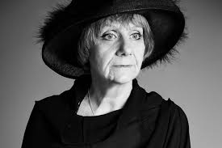

Liudmila Petrushevskaya
Major points
- Confession as abuse (think Notes from Underground)
- Chernukha literature of Glasnost era - emphasizing dark sides of existence, dealing with social taboos, such as body, sexuality, drinking
- Family as battlefield
- Narrator is a poet - critiquing Russian intelligentsia ("I'm A.A.")
- Bad motherhood
